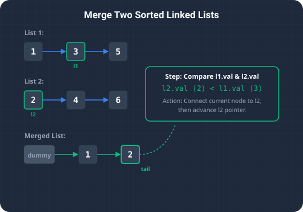

What We're Solving & Splicing Nodes
Consolidating sorted data streams is a fundamental operation with wide application in high-throughput data processing. The Merge Two Sorted Lists problem asks us to merge two sorted singly linked lists into a single sorted linked list. The resulting list must be constructed by splicing together the nodes of the first two lists, keeping all elements in strictly ascending order.
For example, given list1 = 1 -> 2 -> 4 and list2 = 1 -> 3 -> 4, the merged list should resolve to 1 -> 1 -> 2 -> 3 -> 4 -> 4.
A key constraint is that we must merge the lists in-place. This means rather than creating new node instances (which incurs an auxiliary space overhead of O(n + m)), we must update the existing next pointer references of the nodes. This allows the operation to run with O(1) space complexity.

To visualize this iterative sorting approach, imagine playing card decks:
- Parallel Piles: You have two separate piles of cards lying face up on a table. Both piles are already sorted in ascending order (e.g., Pile A is
[1, 3, 5]and Pile B is[2, 4, 6]). - Sequential Merging: To merge them into a single sorted pile, you compare the top card of Pile A with the top card of Pile B. You pick the smaller card, place it face down at the end of your new combined pile, and move to the next card in that pile.
- The Remainder Shortcut: You repeat this comparison step until one of the piles is completely empty. When that happens, you do not need to compare any more cards: you simply pick up the remaining cards from the non-empty pile and place them at the end of your new pile all at once.
The Strategy
Iterative Merge (O(n + m) Time, O(1) Space)
Let's look at the pointer manipulation mechanics of this O(n + m) runtime algorithm:
- Dummy Node Anchor: We create a dummy node (
ListNode dummy = new ListNode(-1)) that serves as a permanent anchor point at the start of our new merged list. We also maintain a pointercurrthat tracks the end of our merged list, initialized todummy. This sentinel node simplifies the code, as we don't have to write complex conditional checks to handle setting the head of the list. - Pointer Comparisons: In each iteration of our loop, we inspect
l1.valandl2.val. We link the node with the smaller value tocurr.next, and then advance both the corresponding list's iterator pointer (l1 = l1.nextorl2 = l2.next) and our tracker pointer (curr = curr.next). - Splicing the Tail: Once either
l1orl2becomesnull, the comparison loop terminates. We then execute a single pointer update:curr.next = (l1 != null) ? l1 : l2;. This instantly attaches the entire remaining segment of the non-empty list to the end of our merged list, executing inO(1)constant time.
Detailed Trace Walkthrough
Let's trace this iterative merging algorithm on the inputs list1 = 1 -> 3 and list2 = 2 -> 4:
- Step 1 (Initialization):
- Create
dummy = ListNode(-1)and setcurr = dummy. - List state:
l1 = [1, 3],l2 = [2, 4]. - Merged list:
dummy -> null.
- Create
- Step 2 (Iteration 1):
- Compare
l1.val(1) andl2.val(2). - Since
1 < 2, we link the smaller node:curr.next = l1. - Advance list pointer:
l1 = l1.next(now pointing to node3). - Advance tracker:
curr = curr.next(now node1). - Merged state:
dummy -> 1.
- Compare
- Step 3 (Iteration 2):
- Compare
l1.val(3) andl2.val(2). - Since
3 >= 2, we link the smaller node:curr.next = l2. - Advance list pointer:
l2 = l2.next(now pointing to node4). - Advance tracker:
curr = curr.next(now node2). - Merged state:
dummy -> 1 -> 2.
- Compare
- Step 4 (Iteration 3):
- Compare
l1.val(3) andl2.val(4). - Since
3 < 4, we link the smaller node:curr.next = l1. - Advance list pointer:
l1 = l1.next(nownull). - Advance tracker:
curr = curr.next(now node3). - Merged state:
dummy -> 1 -> 2 -> 3.
- Compare
- Step 5 (Splicing the Tail):
- The loop terminates because
l1isnull. - We check if any list remains. Yes,
l2is not null (pointing to node4). - We splice:
curr.next = l2. - Merged state:
dummy -> 1 -> 2 -> 3 -> 4.
- The loop terminates because
- Step 6 (Completion): We return
dummy.next, yielding the sorted list:1 -> 2 -> 3 -> 4 -> null.
Code Highlights & Pointer Traversal
Key highlights of our Java solution:
dummyacts as a static head reference, allowing us to returndummy.nextdirectly at the end of the run.curr = curr.nextadvances the pointer of our target list.curr.next = (l1 != null) ? l1 : l2performs theO(1)final splicing step.
Java Solution
Below is the complete Java implementation featuring the node-splicing method, along with a main runner to trace the merged list values.
package io.practise.dsa;
public class MergeTwoSortedLists {
public static class ListNode {
public int val;
public ListNode next;
public ListNode(int val) { this.val = val; }
}
// Optimized - Iterative Merge - O(n + m)
public ListNode mergeTwoLists(ListNode l1, ListNode l2) {
ListNode dummy = new ListNode(-1);
ListNode curr = dummy;
while (l1 != null && l2 != null) {
if (l1.val < l2.val) {
curr.next = l1;
l1 = l1.next;
} else {
curr.next = l2;
l2 = l2.next;
}
curr = curr.next;
}
curr.next = (l1 != null) ? l1 : l2;
return dummy.next;
}
public static void main(String[] args) {
MergeTwoSortedLists solver = new MergeTwoSortedLists();
ListNode l1 = new ListNode(1);
l1.next = new ListNode(2);
l1.next.next = new ListNode(4);
ListNode l2 = new ListNode(1);
l2.next = new ListNode(3);
l2.next.next = new ListNode(4);
System.out.println("--- Merge Two Sorted Lists Demonstration ---");
ListNode result = solver.mergeTwoLists(l1, l2);
printList(result);
}
private static void printList(ListNode head) {
ListNode curr = head;
while (curr != null) {
System.out.print(curr.val + (curr.next != null ? " -> " : ""));
curr = curr.next;
}
System.out.println();
}
}Conclusion & Takeaways
Solving the Merge Two Sorted Lists problem highlights how we can leverage sentinel node references and linear pointer traversal to combine sorted streams in-place. By updating object references directly rather than generating new instances, we achieve maximum memory efficiency with a clean $O(1)$ space profile.